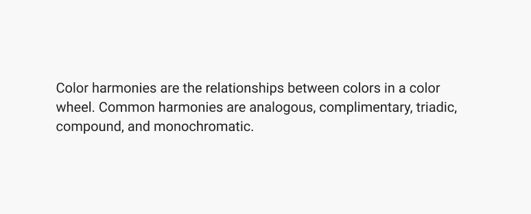

Typography
Typography is a crucial part of a design system, ensuring consistency, readability, and usability across different platforms and devices. Good typography rules help present content clearly and efficiently.
On this page
Typefaces (font family)
DIGIT Typography uses the typefaces Roboto and Roboto Condensed.

Typography Components
Headings
Headings establish the visual hierarchy of the content, guiding users through structured information. They range from large titles for prominent sections to smaller subheadings for organizations.
| Heading | Usage | Mobile | Tablet | Desktop |
|---|---|---|---|---|
headingXl |
Used for main page titles. | 32px | 36px | 40px |
headingL |
Suitable for section headers. | 24px | 28px | 32px |
headingM |
Used for subsections or feature highlights. | 20px | 22px | 24px |
headingS |
Ideal for smaller titles and labels. | 16px | 16px | 16px |
headingXS |
Used for minor headings and annotations. | 12px | 14px | 14px |

Body Text
Body text is the primary content in paragraphs, articles, or instructions. It should be readable, well-spaced, and appropriately sized for different devices.
| Body Text | Usage | Mobile | Tablet | Desktop |
|---|---|---|---|---|
bodyL |
Used for general reading content. | 16px | 20px | 20px |
bodyS |
Ideal for supporting information and descriptions. | 14px | 16px | 16px |
bodyXS |
Used for less prominent text, such as disclaimers. | 12px | 14px | 14px |

Caption Text
Captions text provide supplementary information, often appearing in smaller font sizes below the primary content.
| Caption Text | Usage | Mobile | Tablet | Desktop |
|---|---|---|---|---|
captionL |
Used for standout short descriptions. | 24px | 28px | 28px |
captionM |
Suitable for explanatory notes. | 20px | 24px | 24px |
captionS |
Best for minor clarifications and subtitles. | 16px | 20px | 20px |

Links
Links are interactive text elements used to navigate or perform actions. They are always underlined to indicate clickability. They all have the same scale across all breakpoints.
| Links | Scale |
|---|---|
linkL |
20px |
linkM |
16px |
linkS |
14px |

Buttons
Button text is designed to be clear, actionable, and distinguishable from other text elements. It maintains a bold style for better visibility. They all have the same scale across all breakpoints.
| Button | Scale |
|---|---|
buttonL |
20px |
buttonM |
16px |
buttonS |
14px |

Line Height
Heading And Caption
Heading and Caption use a 1.14× multiplier for Roboto and Roboto condense.

Body and Link
Body and Link use a 1.37× multiplier for Roboto.

Usage Guidelines
Use defined font sizes
Stick to the documented font sizes to maintain a consistent typographic hierarchy and visual rhythm across the application.

Don't use underlines for adding emphasis
Reserve underlines exclusively for hyperlinks to avoid confusing users about what is clickable.

Respect capitalization rules
Use sentence case for most UI elements to enhance readability. Avoid using all-caps for long paragraphs.

Use tabular numbers for numerical data
When displaying data in tables or aligned lists, use tabular figures so numbers line up vertically and are easier to compare.

Don't let paragraph widths get too thin
Maintain an optimal line length (measure) between 45 and 75 characters for comfortable reading.

Keep content short and to the point
Write concisely. Break up long walls of text to ensure users can scan and digest the information quickly.

Don't use indentation
Use spacing between paragraphs instead of indenting the first line. It provides a cleaner and more modern reading experience.

Don't fully-justify text
Avoid fully justified text as it creates uneven spacing and 'rivers' of white space. Left-aligned text is easier to read.

Typography component pairing
Pair headings with appropriate body text scales to create clear relationships and maintain a balanced typographic scale.